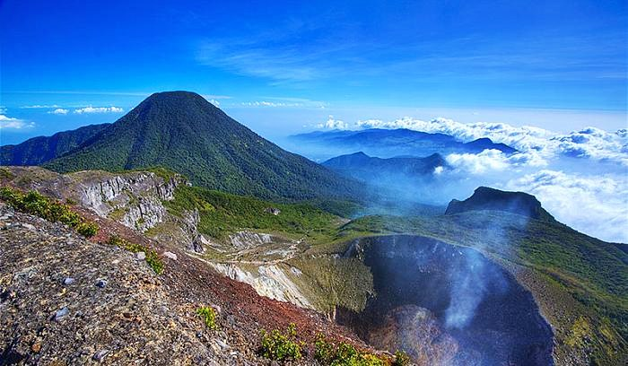

Informasi Detail Gunung
Temukan informasi mengenai gunung yang dapat menjadi referensi sebelum melakukan kegiatan pendakian.
1. Gunung Gede

Gunung Gede merupakan salah satu gunung yang berada di kawasan Taman Nasional Gunung Gede Pangrango, Jawa Barat. Gunung ini menjadi salah satu tujuan pendakian yang populer.
Lokasi: Jawa Barat
Kegiatan: Pendakian, pengamatan alam, dan kegiatan pencinta alam.
Daftar Pendakian2. Gunung Pangrango
Gunung Pangrango berada di kawasan Taman Nasional Gunung Gede Pangrango. Kawasan ini memiliki ekosistem hutan pegunungan yang penting untuk dijaga kelestariannya.
Lokasi: Jawa Barat
Kegiatan: Pendakian dan pengamatan keanekaragaman hayati.
Daftar Pendakian3. Gunung Papandayan
Gunung Papandayan merupakan gunung yang berada di Kabupaten Garut, Jawa Barat. Gunung ini dikenal dengan kawasan kawah dan lanskap alamnya.
Lokasi: Garut, Jawa Barat
Kegiatan: Pendakian, wisata alam, dan fotografi.
Daftar Pendakian